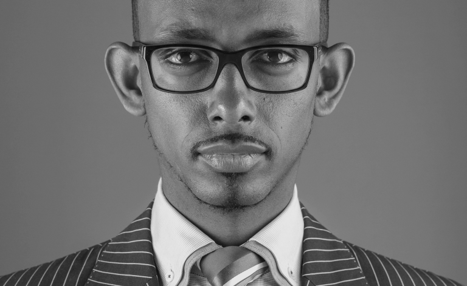

solomon kassa
Author of "geremte sci-tech"

A stanic photography taken from his official website solomonkassa.com
Little about him:
- Solomon Kassa is the producer and host of TechTalk with Solomon television show on Ethiopia Broadcasting Services (EBS). He also currently works as a Technology Consulting Manager at a Fortune 500 global consulting firm. He is the recipient of the 2016 Society of Ethiopians Established in the Diaspora (SEED) award in recognition for his extraordinary commitment to teaching science and technology for millions in his native language Amharic. In 2017, H.E. Minister Dr. Getahun Mekuria on behalf of The Ministry of Science and Technology also recognized Solomon as an ambassador of science and technology for advancing Science & Tech. In addition, Solomon has been nominated to be on the 2018 Most Influential People of African Descent (MIPAD), Under 40, Global 100 List in support of the International Decade for People of African Descent, proclaimed by United Nation's General Assembly.
- Born and grew up in Addis Ababa, Ethiopia, Solomon left his country and moved to the United States in 2004 to fulfill his dream of pursuing higher education. He received his Master of Science degree in Information Systems Technology Management from The George Washington University in 2011 and his Bachelor of Science degree from Strayer University in 2008 majoring in computer programming. He also received Federal Chief Information Officer (CIO) professional certificate that is exclusively awarded by the United States Government.
- With a passion and a deep sense of giving back to his community and his home country, Solomon launched his TV show in 2012 to fulfill his dream of instilling academic and professional aspiration among the young in the field of science and technology. In the past 5+ years, he produced and hosted 160 episodes, interviewed 30 prominent guests, covered more than 500 science and technology topics, and reported from the ground of several high-profile US organizations like NASA, Boeing, Microsoft, Consumer Electronic Show, US States Department, and The George Washington University. Since its launch, Solomon's prime time show has gained huge popularity by millions of viewers.
- Solomon is left-handed and he has such a big passion and love for art and design. He is a pround dad and loves spending time and having fun with his daughter. He loves doing interior design, enjoys fashion, plays musical instruments (piano and drums), likes to spend time with family and friends, and enjoys outdoor activities like jet skiing, skydiving, roller-coaster ride, swimming, biking, ground tennis, and soccer.